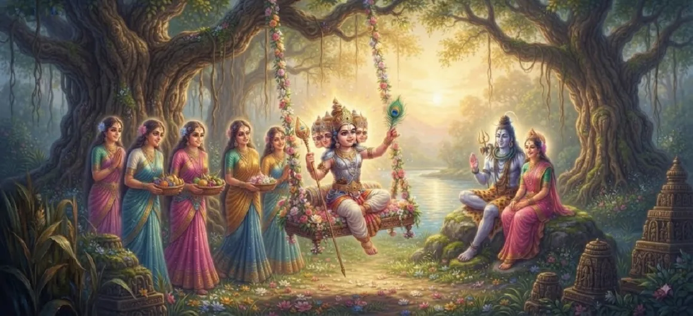

The Childhood of Kumāra
Chapter 16 of the Kumara Khanda provides the complete and expansive account of the wonderful childhood sports, rapid growth, and early exploits of young Kumara in the sacred reed grove.
Weaving together innocent childish grace with hints of supreme cosmic energy, this chapter details how the divine infant grew under the tender care of the Krittikas while astounding all who beheld him.
Chapter 16 Highlights & Full Overview
Saravana Habitat
Growing up amidst the fragrant, divine reed groves.
Playful Lila
Enchanting childhood sports filled with divine light.
Early Valiant Deeds
Effortlessly displaying marvelous strength and agility.
Krittika Devotion
Endless maternal nurturing by the six foster mothers.
Sages' Astonishment
Visiting sages watching his multi-faced splendor in awe.
Commander's Path
Building physical and spiritual vigor for future battles.
Core Topics Detailed in This Chapter
- 01The Rapid and Miraculous Growth in Saravana→
- 02The Delightful Sports and Mischievous Plays→
- 03Subtle Manifestations of Supreme Cosmic Power→
- 04The Unceasing Care and Love of the Krittikas→
- 05Reactions and Marvel of Visiting Celestial Sages→
- 06Establishing the Foundation for the Divine Mission→
- 07Transition to Chapter 17 (The Gods Behold the Divine Child)→
1. The Rapid and Miraculous Growth in Saravana
Following his formal naming ceremony and the establishment of his divine identities, young Kumara continues to reside in the verdant reed forest of Saravana. Unlike ordinary children whose physical and mental maturation takes years of slow progression, the divine infant grows with astonishing velocity, combining supreme spiritual maturity with the vibrant energy of youth. His six faces radiate brilliant light across the groves, illuminating the dense thickets and driving away any lingering darkness.
2. The Delightful Sports and Mischievous Plays
The text vividly describes his daily sports (lila). Skanda runs playfully through the winding paths of the reed forest, engaging in delightful games that blend childish innocence with cosmic wonder. Sometimes he pretends to hide behind tall stalks of grass, only to reappear with six smiling faces to the utter delight of his foster mothers. His laughter echoes like sweet celestial music, filling the forest with a vibrant aura of joy, peace, and spiritual light.
3. Subtle Manifestations of Supreme Cosmic Power
Even while engaged in childlike games, Kumara occasionally displays subtle glimpses of his unmatched, all-powerful nature. When strong gusts of wind threaten to uproot the sacred reeds or heavy boulders obstruct his play area, he removes or stabilizes them effortlessly with a mere touch of his tender hand. These innocent yet mighty exploits remind everyone that behind the charming facade of a growing child lies the supreme energy destined to shatter the demonic empire of Tarakasura.
4. The Unceasing Care and Love of the Krittikas
The six Krittika mothers maintain a constant watch over him, their hearts overflowing with uncontainable maternal love (vatsalya). They run after him as he darts through the thickets, gently scolding him for his mischief, preparing special treats, and embracing him warmly. This deep bond between the foster mothers and the divine child forms a central emotional core of Chapter 16, highlighting how supreme divinity gracefully accepts and reciprocates pure human devotion and care.
5. Reactions and Marvel of Visiting Celestial Sages
Great sages such as Narada, along with various celestial beings, frequently visit Saravana to catch a glimpse of young Kumara. Standing at a respectful distance, they watch in silent awe as the lord of the universe plays like a mortal child. They marvel at the paradox of his form—holding infinite cosmic power while exhibiting the playful charm of infancy—and bow down in deep reverence, chanting silent prayers for his protection and ultimate triumph.
6. Establishing the Foundation for the Divine Mission
Through these delightful growing years, Kumara's physical form and celestial energy become fully integrated and fine-tuned for his future military and spiritual leadership. Every movement, every game, and every display of minor strength prepares him for the monumental battles ahead. The chapter thus bridges his miraculous birth with the impending grand assembly of devas, setting up the next phase of the epic narrative.
7. Transition to Chapter 17 (The Gods Behold the Divine Child)
As young Kumara's marvelous childhood sports continue to echo across the cosmos and captivate the hearts of all who witness them, the narrative prepares for a major milestone. The scene is set for the entire assembly of deities, led by Brahma and Indra, to journey directly to Saravana, paving the way for Chapter 17: **The Gods Behold the Divine Child**.
Key Teachings and Spiritual Takeaways of Chapter 16
Divinity in Play
Joy and playfulness are natural expressions of supreme consciousness.
Pure Maternal Love
Devotion expressed as maternal care dissolves all distance from God.
Effortless Strength
True divine power operates without strain or friction.
Sacred Habitat
Nature flourishes where divine grace and innocence reside.
Humble Awe
Even sages watch divine lila in quiet, respectful reverence.
Progressive Glory
Each growing phase builds the epic destiny of the savior.
Spiritual Reflection
The detailed depiction of Kumara's childhood in Chapter 16 teaches us that the Supreme Lord is not a distant, unapproachable entity, but one who delights in the pure affection of His devotees. By embracing the role of a growing child, Kumara bridges the infinite expanse of the cosmos with the intimate sweetness of home, showing us that divine grace is as tender as it is powerful.
Living the Message of Chapter 16
Nurture a childlike purity and simplicity within your own spiritual practice.
Approach the challenges of daily life with lightness, trust, and inner strength.
Value the deep bonds of care and love that nurture character and soul growth.
Key Spiritual Concepts
The enchanting childhood sports and plays of young Skanda.
Rapid and miraculous growth within the sacred reed forest.
The intense maternal affection and care of the foster mothers.
Subtle displays of supreme cosmic strength during childhood.
The respectful wonder and awe experienced by visiting sages.
Preparation of the invincible soul for ultimate cosmic victory.
Chapter Summary
Kumara Khanda Chapter 16 presents a rich and comprehensive account of young Kumara's growing years in Saravana, highlighting his delightful childish sports, subtle displays of peerless strength, the profound maternal love of the Krittikas, and the silent awe of visiting sages as he prepares for his grand destiny.
Frequently Asked Questions
1. What is the detailed focus of Kumara Khanda Chapter 16?
Chapter 16 focuses thoroughly on the growth and marvelous childhood sports (lila) of young Kumara, detailing how he lived among the Krittikas in the reed grove, exhibited peerless agility, and began showing glimpses of his supreme power.
2. How did young Kumara spend his days in Saravana?
He spent his days playing active games among the fragrant thickets, running with his six faces glowing with joy, and astounding his foster mothers and visiting sages with his immense vitality.
3. What role did the Krittikas play during his childhood?
The Krittikas acted as his loving nursing mothers, watching over him with intense maternal affection, feeding him, and protecting him as he grew rapidly in divine power.
4. What chapter follows Chapter 16?
The next chapter is Chapter 17, titled 'The Gods Behold the Divine Child'.
“Amidst the fragrant reeds of Saravana, the divine child played with boundless grace, uniting supreme cosmic might with the tender joy of infancy.”
Continue Through Kumara Khanda
Chapter 16 details the full childhood of Kumara. Continue to the next chapter, The Gods Behold the Divine Child.